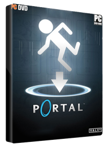

Portal este un joc video din 2007, single-player, first-person, de rezolvat puzzle-uri dezvoltat de Valve Corporation.
Jocul cuprinde în primul rând o serie de puzzle-uri care trebuiesc rezolvate prin teleportarea personajului jucatorului şi a obiectelor simple folosind "Portalul, un dispozitiv portabil" care poate crea portaluri interspaţiale între două planuri plate. Personajul-jucator Chell este provocat de o inteligenţă artificială numită GLaDOS (Genetic Lifeform and Disk Operating System) să termine fiecare puzzle din centru ştiinţific (Aperture Science Enrichment Center) folosind pistolul portal cu promisiunea de a primi tort atunci când toate puzzle-urile sunt finalizate.
Preţ : 13,39 €